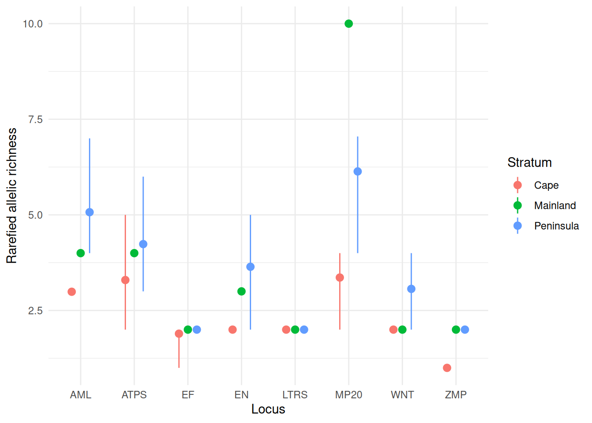

library(gstudio)
library(dplyr)
library(ggplot2)
data(arapat)4 Allele Frequencies & HWE
This chapter covers estimating allele and genotype frequencies, testing for Hardy-Weinberg Equilibrium, and rarefaction analysis.
4.1 Allele Frequencies
The frequencies() function is an S3 generic that works on both individual locus vectors and entire data.frames.
4.1.1 Single Locus
arapat |>
pull(LTRS) |>
frequencies() Allele Frequency
1 01 0.523416
2 02 0.4765844.1.2 Entire Data Frame
When applied to a data.frame, frequencies() returns frequencies for all locus columns:
freqs <- arapat |>
frequencies()
freqs |>
head(12) Locus Allele Frequency
17 AML 01 0.001470588
18 AML 02 0.001470588
19 AML 03 0.019117647
20 AML 04 0.126470588
21 AML 05 0.070588235
22 AML 06 0.072058824
23 AML 07 0.235294118
24 AML 08 0.255882353
25 AML 09 0.145588235
26 AML 10 0.014705882
27 AML 11 0.039705882
28 AML 12 0.0161764714.1.3 By Stratum
Add a stratum argument to partition frequencies by population:
freqs_pop <- arapat |>
frequencies(stratum = "Species")
freqs_pop |>
head(12) Stratum Locus Allele Frequency
1 Cape AML 01 0.0000000
2 Cape AML 02 0.0000000
3 Cape AML 03 0.0915493
4 Cape AML 04 0.6056338
5 Cape AML 05 0.3028169
6 Cape AML 06 0.0000000
7 Cape AML 07 0.0000000
8 Cape AML 08 0.0000000
9 Cape AML 09 0.0000000
10 Cape AML 10 0.0000000
11 Cape AML 11 0.0000000
12 Cape AML 12 0.0000000Because the result is a tidy data frame, dplyr summaries follow directly, for example the most common allele at each locus in each species:
freqs_pop |>
group_by(Stratum, Locus) |>
slice_max(Frequency, n = 1, with_ties = FALSE) |>
filter(Locus %in% c("LTRS", "WNT"))# A tibble: 6 × 4
# Groups: Stratum, Locus [6]
Stratum Locus Allele Frequency
<chr> <chr> <chr> <dbl>
1 Cape LTRS 02 0.92
2 Cape WNT 02 0.865
3 Mainland LTRS 02 0.736
4 Mainland WNT 01 0.983
5 Peninsula LTRS 01 0.692
6 Peninsula WNT 03 0.6094.1.4 Selecting Specific Loci
arapat |>
frequencies(loci = c("LTRS", "WNT")) Locus Allele Frequency
1 LTRS 01 0.523415978
2 LTRS 02 0.476584022
3 WNT 01 0.357954545
4 WNT 02 0.181818182
5 WNT 03 0.430397727
6 WNT 04 0.026988636
7 WNT 05 0.0028409094.2 Frequency Matrix
The frequency_matrix() function produces a wide-format matrix of allele frequencies:
fm <- arapat |>
frequency_matrix(stratum = "Species")
fm[, 1:8] Stratum AML-01 AML-02 AML-03 AML-04 AML-05 AML-06
1 Cape 0.000000000 0.000000000 0.0915493 0.6056338 0.30281690 0.00000000
2 Mainland 0.000000000 0.000000000 0.0000000 0.0000000 0.00000000 0.00000000
3 Peninsula 0.002016129 0.002016129 0.0000000 0.0000000 0.01008065 0.09879032
AML-07
1 0.0000000
2 0.0000000
3 0.32258064.3 Genotype Counts and Frequencies
4.3.1 Genotype Counts per Stratum
The genotype_counts() function summarizes non-missing genotype counts per locus, optionally by stratum:
arapat |>
genotype_counts() Stratum N LTRS WNT EN EF ZMP AML ATPS MP20
ALL ALL 363 363 352 360 361 330 340 363 358arapat |>
genotype_counts(stratum = "Species") Stratum N LTRS WNT EN EF ZMP AML ATPS MP20
Cape Cape 75 75 74 75 75 70 71 75 75
Mainland Mainland 36 36 30 35 34 20 21 36 33
Peninsula Peninsula 252 252 248 250 252 240 248 252 2504.3.2 Genotype Frequencies
The genotype_frequencies() function returns observed and expected genotype counts for a locus vector:
arapat |>
pull(LTRS) |>
genotype_frequencies() Genotype Observed Expected
1 01:01 147 99.44904
2 01:02 86 181.10193
3 02:02 130 82.449044.4 Hardy-Weinberg Equilibrium
The hwe.test() function tests for HWE using a chi-square approximation. A single locus gives a standard test, printed like chisq.test():
arapat |>
filter(Species == "Mainland") |>
pull(LTRS) |>
hwe.test()Warning in .hwe_chisq(x[[loci]], label = loci, suppress_warnings =
suppress_warnings): Under 50 samples for pull(filter(arapat, Species ==
"Mainland"), LTRS) this may not be a good approximation.Warning in .hwe_chisq(x[[loci]], label = loci, suppress_warnings =
suppress_warnings): Fewer than 5 genotypes expected at pull(filter(arapat,
Species == "Mainland"), LTRS) consider collapsing alleles.
Chi-square test for Hardy-Weinberg equilibrium with continuity
correction
data: pull(filter(arapat, Species == "Mainland"), LTRS)
X-squared = 0.90828, df = 1, p-value = 0.3406Several loci, or a stratum, give a table with one row per test: the chi-square statistic, degrees of freedom, p-value and method. Significant p-values indicate departures from HWE expectations.
arapat |>
hwe.test(stratum = "Species", loci = c("LTRS", "WNT")) Stratum Locus statistic df p.value
1 Cape LTRS 2.7682735 1 9.614982e-02
2 Cape WNT 38.1273682 1 6.627400e-10
3 Mainland LTRS 0.9082806 1 3.405710e-01
4 Mainland WNT 29.2542373 1 6.347726e-08
5 Peninsula LTRS 46.9566665 1 7.257371e-12
6 Peninsula WNT 85.1611263 6 3.056896e-16
method
1 Chi-square test for Hardy-Weinberg equilibrium with continuity correction
2 Chi-square test for Hardy-Weinberg equilibrium with continuity correction
3 Chi-square test for Hardy-Weinberg equilibrium with continuity correction
4 Chi-square test for Hardy-Weinberg equilibrium with continuity correction
5 Chi-square test for Hardy-Weinberg equilibrium
6 Chi-square test for Hardy-Weinberg equilibrium with continuity correction4.4.1 Interpreting Results
Departures from HWE can arise from:
- Non-random mating (inbreeding, assortative mating)
- Population substructure (Wahlund effect)
- Selection at or near the marker locus
- Small population size (genetic drift)
4.5 Rarefaction
Diversity statistics such as allelic richness grow with sample size, so strata sampled unequally cannot be compared directly. rarefaction.test() rarefies each locus to the smallest number of genotyped individuals in any stratum: every larger stratum is resampled nperm times without replacement at that size, and the table gives the observed value, the mean across resamples (estimate) and a percentile interval (conf.low, conf.high) for each stratum, locus and mode. With several loci, a Multilocus row per stratum combines each resample across loci. It is NA for a stratum missing any of the loci, so strata are compared over the same loci; na.rm = TRUE combines the loci that are available instead.
set.seed(1)
rare <- arapat |>
rarefaction.test(stratum = "Species", mode = c("A", "Ae"), nperm = 199)
rare |>
filter(Locus == "Multilocus")
Rarefaction without replacement (199 resamples)
data: arapat by Species
size: smallest stratum at each locus
95 percent percentile interval of the resampled values
Stratum Locus Mode N size observed estimate conf.low conf.high
1 Cape Multilocus A NA NA 2.625 2.318 2.125 2.625
2 Cape Multilocus Ae NA NA 1.391 1.387 1.310 1.460
3 Mainland Multilocus A NA NA 3.625 3.625 3.625 3.625
4 Mainland Multilocus Ae NA NA 1.979 1.979 1.979 1.979
5 Peninsula Multilocus A NA NA 4.875 3.519 3.119 3.881
6 Peninsula Multilocus Ae NA NA 2.208 2.156 2.012 2.330rare |>
filter(Mode == "A", Locus != "Multilocus") |>
ggplot(aes(Locus, estimate, colour = Stratum)) +
geom_pointrange(aes(ymin = conf.low, ymax = conf.high),
position = position_dodge(width = 0.5)) +
labs(y = "Rarefied allelic richness") +
theme_minimal()
Set size = to rarefy to a fixed number of individuals instead; strata with fewer genotypes at a locus are NA. The resampled values for each row are kept in the list-column values, which printing hides.
4.6 Optimal Sampling
The optimal_sampling() function estimates how many individuals are needed to capture a given proportion of allelic diversity:
arapat |>
pull(LTRS) |>
optimal_sampling(nrep = 99)4.7 Without Pipes
frequencies(arapat$LTRS)
frequencies(arapat, stratum = "Species")
frequencies(arapat, loci = c("LTRS", "WNT"))
frequency_matrix(arapat, stratum = "Species")
genotype_counts(arapat, stratum = "Species")
genotype_frequencies(arapat$LTRS)
hwe.test(arapat[arapat$Species == "Mainland", ])
rare <- rarefaction.test(arapat, stratum = "Species", mode = c("A", "Ae"), nperm = 199)
rare[rare$Locus == "Multilocus", ]
optimal_sampling(arapat$LTRS, nrep = 99)